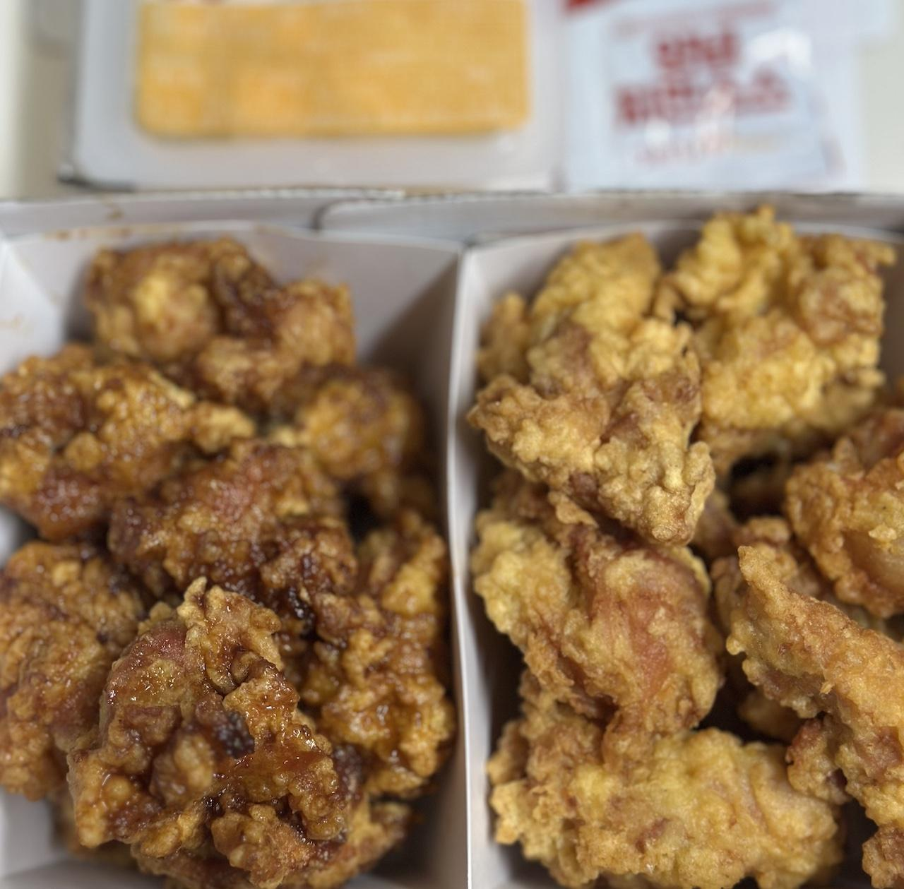

또래오래의 갈릭치킨에 관한 기록
지난 또래오래 순살 치킨의 호평 이후로 언제 다른 메뉴를 먹어보나 생각만 하고 있었지만 갑작스럽게 메뉴 선정이라는 칼(?)을 휘두르게 되어 결국 또래오래의 양념 순살 외의 다른 선택지를 골라볼 기회가 생겼다.
이번에는 또래오래 반반 세트로 후라이드+갈릭 순살 치킨을 주문했다. 다만 후라이드는 이전에 정리한 바에서 달라질 게 없을 것이기에 이 글에서는 갈릭 순살치킨만 기록해 보고자 한다.
이번에도 배달은 참 빨리 왔다.
 콜라를 미리 냉장고로 피신시킨 패키지 구성
역시나 또래오래의 순살치킨의 비주얼은 그다지 좋게 보기에는 힘들다. 사진만 보면 그다지 끌리지가 않는다. 하지만 더 중요한 것은 식감과 맛이니 비주얼은 그냥 넘어가자.
또래오래의 순살 답게 닭다리살로만 구성된 것은 여전히 다른 가족의 호평을 받기엔 충분했다. 개인적으로는 여전히 닭가슴살도 섞인 것을 좋아하지만 그래도 충분히 촉촉하고 부드러웠기에 여전히 이 부분에선 좋은 점수를 주고 싶다.
맛은 약간의 마늘 향이 있는 간장 치킨으로 정리할 수 있을 것 같다. 즉 갈릭이라는 이름 치곤 마늘 맛이 별로 안 났다는 말이다. 간은 집 근처의 페리카나 간장치킨 만큼은 아니지만 꽤나 짭짤해서 밥 반찬으로 적절했다. 특히 양념에 비해서 갈릭치킨은 맛이 그다지 과하지 않아서 좀 더 나은 평가가 가능할 것 같다.
식감은 역시나 닭다리살 답게 육즙과 고소함과 부드러움의 공존 그리고 약간 눅눅했지만 조금은 바삭했던 튀김옷이 나름 조화롭게 올라오는 느낌이다. 확실한 건 양념에 비해 눅눅함은 덜햇다는 점이다.
결론
또래오래의 갈릭치킨은 밥과 먹는다면 다시 시켜먹을 생각은 충분하다. 양념보다 취향에 맞았고 흰 쌀밥과도 잘 어울렸다. 무엇보다 양념보다 눅눅함이 덜했다는 건 충분한 이점이다.
그 짭짤함으로 술 안주로는 괜찮지 않을까 할 수도 있는데 이 글을 쓰는 작자는 어쨌든 모른다. 왜냐하면 알콜 알레르기도 만년 술 한 방울도 마시지 못 하는 사람이기 때문이다. 아마도 술과 관련된 글은 그저 술에 대한 비평(?) 정도일 것이다.
어쨌든 또래오래 순살은 여전히 맛있었다. 이 글을 쓰는 작자의 집 주변 상황 한정으로 뼈 치킨은 페리카나, 순살 치킨은 또래오래라는 구도는 당분간 이어질 것 같다.